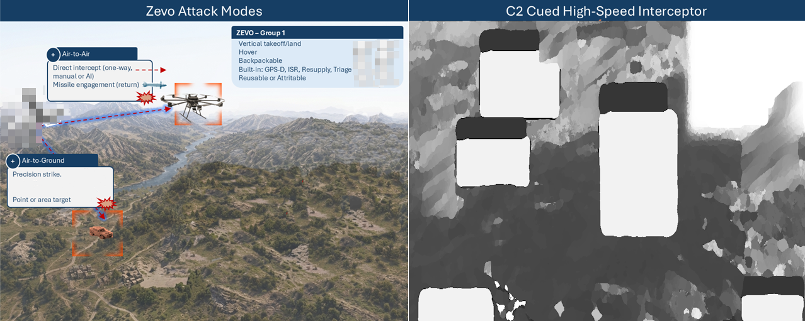
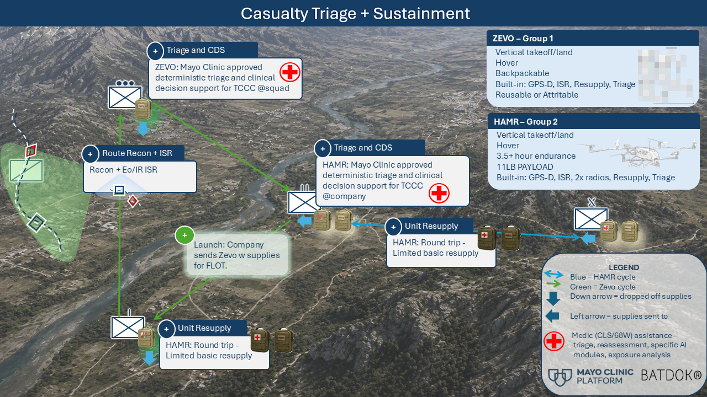
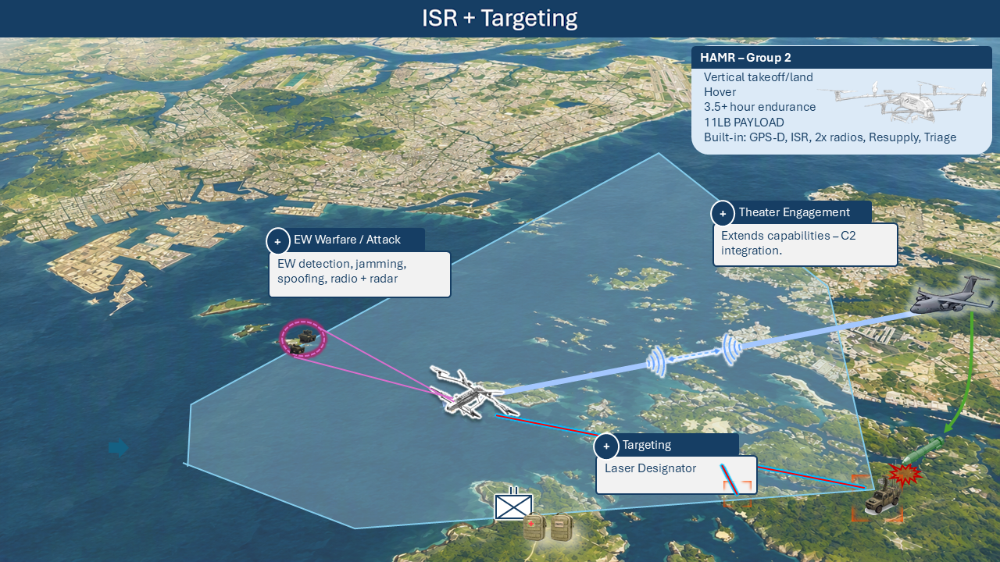
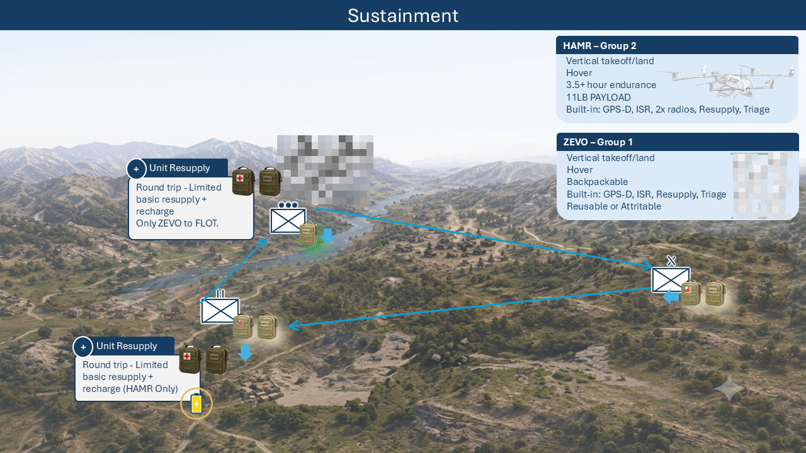
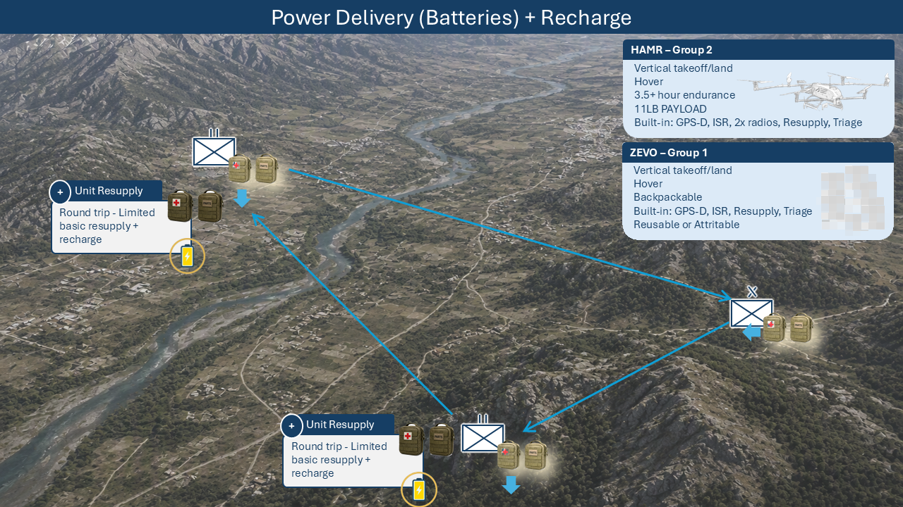
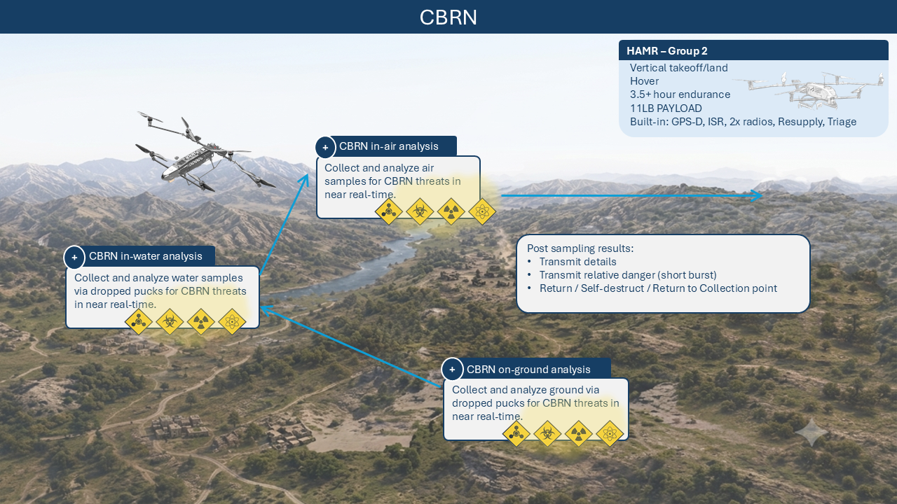

MISSIONS
All missions on SPEARHEAD
Baseline operational capability in any environment and contested space (navigation, airspace, comms). Integrated with multiple C2 and forward-area air defense systems.
MISSIONS
Baseline operational capability in any environment and contested space (navigation, airspace, comms). Integrated with multiple C2 and forward-area air defense systems.
Every SPEARHEAD mission assumes GPS-denied / DDIL environments, contested airspace, and resilient short-burst and MANET communications.
Multiple missions share the same stack.
HSI is the new 500 mph high speed interceptor in pre-production, and complements the lower speed Group-1 ZEVO as an attack drone. ZEVO operates as an air-to-air and air-to-ground attack drone, and is reusable — delivering exceptionally low cost/kill capability.


Support assessment, triage, and casualty hold at the edge with additional zoonotic condition analysis. Perform in-air detection and assessment of forces (friendly, allied, adversary, unknown) with pose assessment. DoW Group-1 and Group-2 exclusive partner, Dane Health, Inc. for triage and clinical decision support.

Spearhead enables continuous multi-sensor analysis, detection, and classification with AI sensor fusion across EO/LWIR/SWIR, event cameras and radar. Tracking and target custody capability with full C2 integration and handoff. Inquire to learn more.


Maintain parts, medical supplies, and sustainment to the distributed force / tactical edge supporting distributed mobile forces. HAMR modular bay and ZEVO payload options for critical item resupply in contested logistics.
Keep distributed forces supported with edge power and battery sustainment. ZEVO and HAMR fill complementary roles: ZEVO focuses on battery exchange for distributed small-UAS and tactical loads; HAMR provides land-and-power ground energy delivery as a Group-2 edge power node.


Perform sampling in-air and with dropped ground and water pucks for CBRN threats. Report with short-burst communications; non-return capable for high-risk environments. SPEARHEAD contested comms and edge autonomy keep operators clear of exposure.